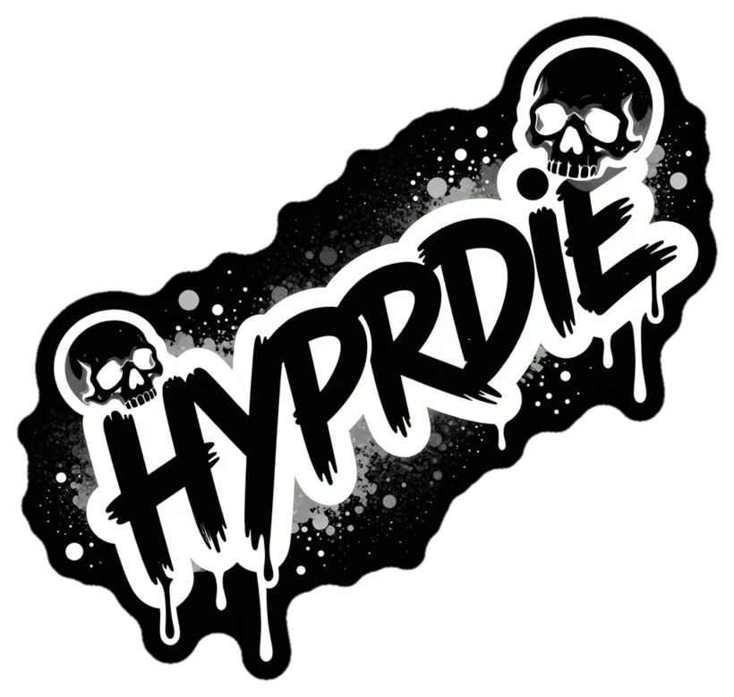

A graceful shutdown screen for Hyprland.
hyprdie throws a fullscreen overlay over everything still running in your session, asks each app to close, escalates when one refuses, and only then exits. So a reboot stops silently eating unsaved work.
one layer surface, drawn straight through wl_shm — no toolkit, no GTK
# build — the build script pkg-configs xkbcommon headers
▸ git clone https://github.com/nnthnn/hyprdie
▸ cargo build --release
▸ sudo install -Dm755 target/release/hyprdie /usr/local/bin/
# bind it — ~/.config/hypr/hyprland.conf
▸ bind = $mainMod SHIFT, E, exec, hyprdie --post-cmd 'systemctl poweroff'
# or see exactly what it would do before trusting it with your session
▸ hyprdie --dry-run
hyprctl -j layers, so nothing outlives the session.hyprctl dispatch closewindow, and
sends SIGTERM to each process.behavior.retry_interval_ms — watching the live app
list shrink as things fall over.behavior.sigkill_timeout_ms is
escalated to SIGKILL.commands.post and then
hyprctl dispatch exit.Every app gets a polite closewindow and a SIGTERM before anything is killed. Only the stubborn ones get escalated.
Refusing to die just delays the inevitable: after a configurable timeout, SIGKILL lands automatically.
The overlay re-polls hyprctl -j clients every tick, so closed apps vanish and the remaining count ticks down as you watch.
Bars and notification daemons are pulled in via hyprctl -j layers instead of being left to outlive the session.
Hyprland's ancestors — the display manager's session helper and the launcher — are subtracted from the kill set, and hyprdie removes its own PID every poll.
commands.post runs before Hyprland exits and hyprdie waits for it, so systemctl reboot can authorise with logind while the session is alive.
--dry-run shows the overlay and closes nothing — the safe way to see what it does before binding it to a key.
Point ui.background at a file and it's cover-scaled to the output. The format is sniffed from the content, not the extension.
Title, every text colour, timings, and the command that runs last — all optional in ~/.config/hyprdie/config.toml.
Closing the terminal that launched it won't take it down — SIGHUP is ignored so it survives long enough to finish the job.
The surface is ARGB wl_shm through smithay-client-toolkit. No GTK, no winit, no runtime dependencies beyond Hyprland and systemd.
When there's no session cgroup to lean on, it walks the process tree instead. It may miss a reparented app, but it never reaches Hyprland's own ancestors.
Closes nothing and leaves the session running. The escape hatch.
Kills every tracked process at once with SIGKILL, then continues the shutdown. Only changes how apps close — the post command and exit still run.
HYPRLAND_INSTANCE_SIGNATURE at startup and bails with a clear message if it isn't set.libxkbcommon-dev on Debian/Ubuntu, xkbcommon on Arch. Even cargo check needs them.